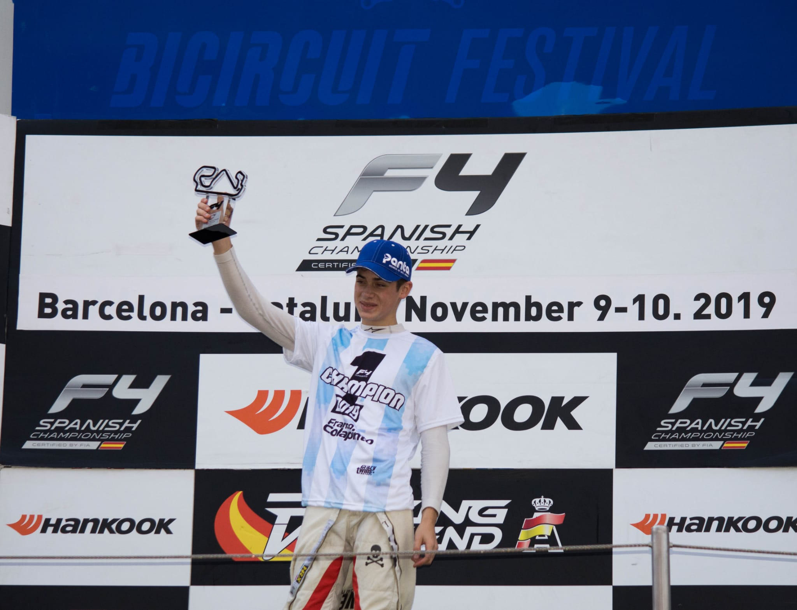
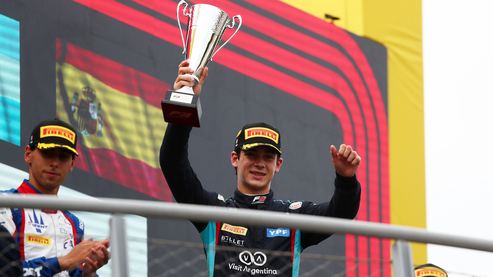
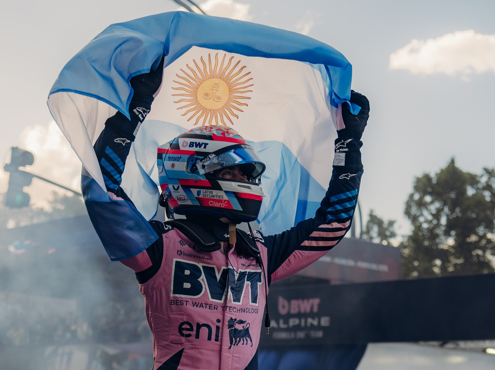

Karting: El origen del sueño
Franco Colapinto comenzó su camino en el automovilismo a los 9 años, compitiendo en karting en Argentina. Desde pequeño demostró grandes habilidades al volante y consiguió importantes títulos regionales y nacionales. En 2017 y 2018 obtuvo campeonatos argentinos de karting. A los 14 años decidió trasladarse a Europa junto a su familia para continuar desarrollando su carrera y competir en categorías internacionales.

F4 Española: El primer gran título
En 2018 debutó en monoplazas con Drivex School. Un año después, tuvo una temporada extraordinaria: consiguió 11 victorias, 13 podios y 11 pole positions, consagrándose campeón de la Fórmula 4 Española. Fue su primer gran título internacional.

F3: Conquistando Europa
En 2022 llegó a la Fórmula 3 de la FIA, donde compitió con el equipo Van Amersfoort Racing. Durante su primera temporada consiguió dos victorias, una en Imola y otra en Monza. En 2023 pasó a MP Motorsport, donde tuvo una temporada destacada: consiguió otras dos victorias y cinco podios, finalizando cuarto en el campeonato. Sus buenos resultados le permitieron acercarse a la Fórmula 2.

F2: A un paso de la gloria
En 2024 dio el siguiente paso de su carrera al incorporarse a la Fórmula 2 con MP Motorsport. Su rendimiento fue muy bueno y consiguió su primera victoria en la categoría durante la carrera sprint de Imola, después de realizar un gran adelantamiento en la última vuelta. También logró importantes resultados y participó en una práctica libre de Fórmula 1 con Williams en el Gran Premio de Gran Bretaña. Su desempeño llamó la atención del equipo, que poco después le ofreció una oportunidad en la máxima categoría.

F1: El sueño hecho realidad
En agosto de 2024, Williams anunció su incorporación como piloto titular para las últimas nueve carreras de la temporada, reemplazando a Logan Sargeant. Debutó oficialmente en el Gran Premio de Italia y consiguió sus primeros puntos en Azerbaiyán, convirtiéndose en uno de los argentinos más destacados del automovilismo moderno. En 2025 se incorporó a Alpine inicialmente como piloto de reserva y posteriormente pasó a ocupar un asiento titular. En 2026 continúa compitiendo con Alpine, consolidando su presencia en la Fórmula 1.

El camino hacia la cima
Detrás de cada carrera hay años de esfuerzo, sacrificio y pasión.
- 2012: Comienza a competir en karting.
- 2018: Debuta en la Fórmula 4 Española.
- 2022: Llega a la Fórmula 3.
- 2024: Compite en Fórmula 2 y debuta en Fórmula 1 con Williams.
- 2025: Se incorpora a Alpine en la Fórmula 1.